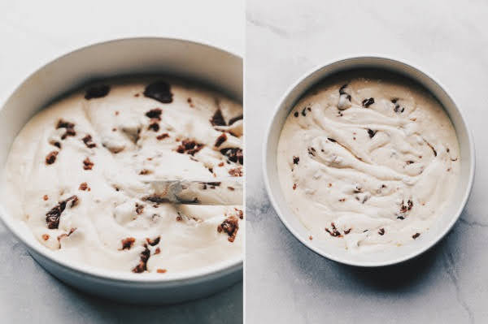
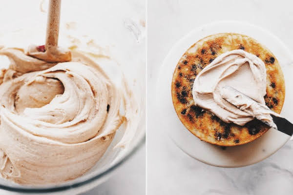

In a large bowl using a hand-held mixer or stand mixer fitted with a whisk or paddle attachment, beat the butter on medium speed until creamy, about 2 minutes. Switch the mixer up to medium-high speed and add the cream cheese one piece at a time, mixing until each has combined before adding the next. Once the cream cheese is combined, add the brown sugar and beat on medium-high speed until combined, about 1 minute. Stop the mixer and add the cinnamon, confectioners sugar, heavy cream, vanilla extract, and salt. Turn the mixer on low speed and beat for 30 seconds, then turn the mixer up to medium-high speed and beat until completely combined and creamy.
Cinnamon Swirl

- 1/2 cup packed light or dark brown sugar
- 1 Tablespoon ground cinnamon
- 1/4 cup unsalted butter, melted
- 1/3 cup all-purpose flour or cake flour
With a fork, mix the brown sugar, flour, and cinnamon together until combined. Pour the melted butter on top and mix just until combined. Use immediately in the cake batter (next step) because the longer it sits out, the harder it will get as a result of the butter solidifying.
Drop small spoonfuls of the cinnamon swirl on each of the unbaked cakes. Use a knife to gently swirl the spoonfuls into the batter. Some pieces will remain as chunks and some will swirl into the batter.
Bake for around 23-26 minutes or until the cakes are baked through. To test for doneness, insert a toothpick into the center of the cake. If it comes out clean, its done. Allow cakes to cool completely in the pans set on a wire rack. The cakes must be completely cool before frosting and assembling.
Brown Sugar Cinnamon Buttercream
Ingredients
Instructions
Decorating
Storage
- 1 and 1/4 cups unsalted butter
- 8 ounces full-fat block cream cheese
- 3/4 cup packed light brown sugar
- 1 Tablespoon ground cinnamon
- 5 and 1/2 cups confectioners’ sugar
- 1/4 cup heavy cream or whole milk
- 1 teaspoon pure vanilla extract
Level the cakes & add the crumb coat: Using a large serrated knife, slice the domes off the cooled cakes to create a flat surface. Discard domes. Place 1 cake layer on a cake stand, cake turntable, or serving plate. Evenly spread about 1 and 1/2 cups of frosting on top. Top with 2nd cake layer and evenly spread another 1 and 1/2 cups of frosting on top. Top with the third cake layer.
Spread a thin layer of frosting around the sides and top of the cake. Spread a little extra frosting on top of the cake and use any leftover frosting to pipe detail around the edges, if desired.
Refrigerate cake for at least 30-60 minutes before slicing and serving. This helps the cake hold its shape when cutting. Cover leftover cake tightly and store in the refrigerator for up to 5 days